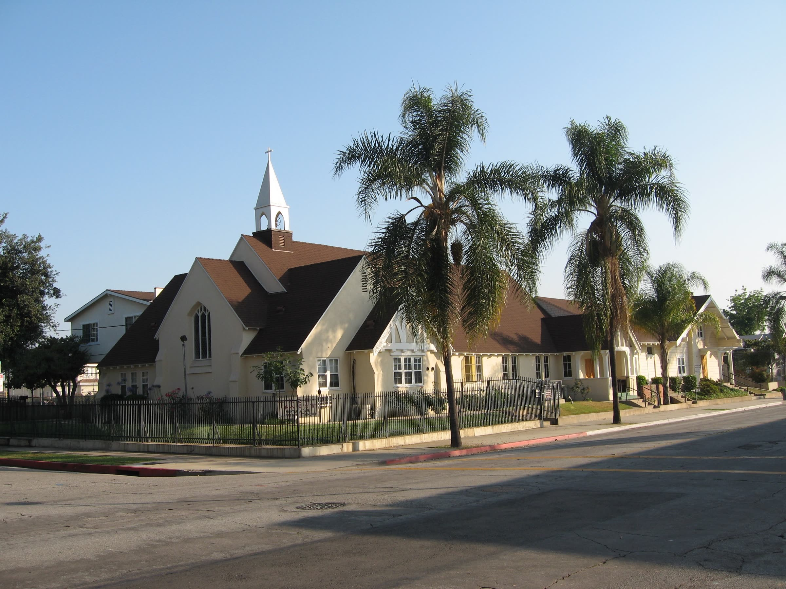

About our church
Monterey Park Chinese Baptist Church 慕道園華人浸信會 · 認識教會
One church family, worshipping in Cantonese, English and Mandarin since 1977, at 302 W. Commonwealth Ave., Alhambra.
Plan your visit

New here? 初次來訪
We know visiting a church for the first time can feel intimidating. Our goal is simple: to help you feel welcomed, informed, and comfortable from the moment you arrive.
Who comes. Whether you’re exploring Christianity, looking for a church home, or returning to church after many years, you’ll find authentic community, practical biblical teaching, and people who genuinely care.
What to expect. Friendly and welcoming environment, Christ-centered worship, Bible-based teaching, Casual attire, Opportunities to meet others, Programs for children, youth, college students, and adults.
Where to go. 302 W. Commonwealth Ave., Alhambra. Cantonese and Mandarin worship in the Sanctuary; English worship in the Fellowship Hall; Youth Sunday School in the education annex.
When. Sundays: Mandarin 9:00 AM, Children 10:00 AM, Cantonese 11:00 AM, English 11:00 AM. Questions: (626) 289-1284 or info@mpcbc.net.

Our history
教會歷史
1977 Cantonese
Our church was founded in 1977 with worship in Cantonese.
The 1980s
Mandarin-speaking immigrants in Los Angeles grew rapidly; the church saw the need for a spiritual home for new arrivals.
1988 Mandarin
Mandarin worship began, to share the gospel with new arrivals.
1991 English
English worship was added to the church’s Sunday.
Today
The church continues to worship in all three languages.
One roof
Sanctuary for Cantonese and Mandarin; Fellowship Hall for English.
教會成立於 1977年。教會剛開始是使用粵語崇拜。但從八十年代起，教會看到講國語的新移民人數在洛杉磯迅速增長，考慮到新移民對基督福音的需要。於是，教會決定開展國語事工，為新移民群體預備一個屬靈的家，於1988年開始了國語崇拜。之後，在1991年教會又增設了英語的崇拜，直到如今，教會一直保持有三種語言的崇拜。
What we believe
8 foundationsGod神
God is the Creator and Ruler of the universe. He exists eternally as three persons: the Father, the Son and the Holy Spirit. These three are equal and are one God.
Genesis 1:1,26,27, 3:22, Psalms 90:2; Matthew 28:19; 1 Peter 1:2; 2 Corinthians 13:14
Jesus Christ耶穌基督
Jesus Christ is the Son of God and is equal with the Father. Jesus lived a sinless life on earth and offered Himself as the perfect sacrifice, dying on the cross for all humanity. He rose from the dead after three days, demonstrating His power over sin and death. He ascended to heavenly glory and will return to earth as King of kings and Lord of lords.
Matthew 1:22-23; Isaiah 9:6; John 1:1-5, 14:10-30; Hebrews 4:14,15; 1 Corinthians 15:3-4; Romans 1:3-4; Acts 1:9-11; 1 Timothy 6:14; Titus 2:13
The Holy Spirit聖靈
The Holy Spirit is equal with the Father and the Son. He is present in the world to help people know Christ, and He lives in every Christian from the moment of salvation. He gives believers power for daily living, understanding of spiritual truth and guidance for the way ahead. He gives spiritual gifts to every believer. As Christians, we seek daily to live under the Holy Spirit’s direction.
2 Corinthians 3:17; John 16:7-13, 14:16-17; Acts 1:8; 1 Corinthians 2:12; 3:16 Ephesians 1:13,5:18; Galatians 5:25
The Bible聖經
The Bible is God’s Word to us, written by people under the supernatural guidance of the Holy Spirit. It is the highest authority for Christian faith and life.
2 Timothy 3:16,1:13; 2 Peter 1:20-21; Psalms 119:105, 160, 12:6; Proverbs 30:5
Humanity人類
Human beings were created in God’s spiritual image, reflecting His character. Humanity is the pinnacle of God’s creation. Although every person has the potential for good, our sinful attitudes separate us from God and bring many problems into our lives.
Genesis 1:27; Psalms 8:3-6; Isaiah 53:6a; Romans 3:23; Isaiah 59:1-2
Salvation救恩
Salvation is God’s free gift, which we must receive. We can never atone for our sins through good works or self-improvement. Only through Jesus Christ and God’s forgiveness can we be delivered from the penalty of sin. We are saved when we turn in faith to Jesus from a self-centred life lived in our own strength. Eternal life begins when we receive the life of Jesus Christ by faith.
Romans 6:23,5:1; Ephesians 2:8-9; John 14:6;1:12; Titus 3:5; Galatians 3:26
Eternal Security永遠的保障
Because God gives us eternal life through Jesus Christ, true believers have eternal assurance of salvation. Salvation comes through God’s power and grace, not through a Christian’s own efforts. His preserving power and grace give us this lasting assurance. Believers also have a responsibility to continue trusting God and living in His care.
John 10:29; 2 Timothy 1:12; Hebrews 7:25, 10:10,14; 1 Peter 1:3-5; Hebrews 6:4-8; Hebrews 10:26-27; John 15:6
Eternity永恆
People were created to exist forever. We will either be eternally separated from God because of sin, or live eternally with Him through forgiveness and salvation. Eternal separation from God is hell; eternal life is being with God forever.
John 3:16, 2:25, 5:11-13; Romans 6:23; Revelation 20:15; Matthew 1:8; Matthew 2:44,46

Pastors & leaders
教牧團隊

Rev. Caleb Cheung, Ph.D. 張健庭牧師
Senior Pastor · Cantonese congregation · 主任牧師及粵語堂牧師
Originally from Hong Kong, Pastor Caleb studied at Fuller Theological Seminary and Claremont Graduate University and now serves as our senior pastor.
Rev. Edward Lu 呂德勝牧師
Pastor · English congregation · 英語堂牧師
Lead pastor of Connect Ministry, the church’s English-language ministry.
[Pastor name] [牧師姓名]
Pastor · Mandarin congregation · 國語堂牧師
[One line about this pastor.]
Contact & directions
交通指南
302 W. Commonwealth Ave.
Alhambra, CA 91801
info@mpcbc.net · Office hours: [Days, times]
Get directions